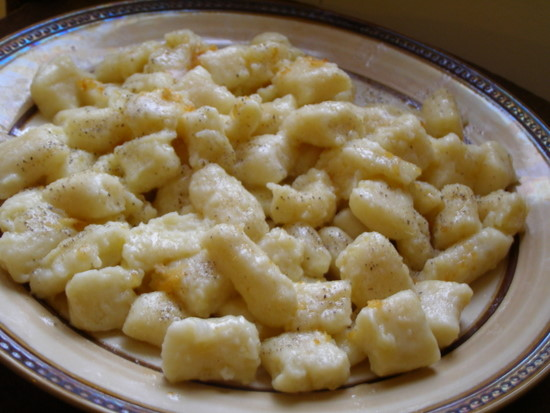

<DOCTYPE! html>
<html>
	<head>
		<title>Nick's Cookbook</title>
		<link href="../CSS style.css" type="text/css" rel="stylesheet" />
	</head>
	<body>
		<h1><center>Nick's Cookbook</center></h1>
		<h2>Potato Gnocchi</h2>
		<br />
		<a href="http://www.finecooking.com/recipes/lauras-potato-gnocchi.aspx">Source of Recipe</a><br /><br /><br />
		<p>Estimated Time to Prepare: 1 1/2 hours</p>
		<p>Servings: 4</p>
		<p>Ingredients:</p>
		<table>
			<tr class="odd">
				<td>2 lb. russet potatoes (about 4 medium), scrubbed</td>
				<td><form action="">
					<input type="checkbox" name="ing" value="1" />
				</form></td>
			</tr>
			<tr class="even">
				<td>6-3/4 oz. (1-1/2 cups) unbleached all-purpose flour, more for kneading and rolling</td>
				<td><form action="">
					<input type="checkbox" name="ing" value="2" />
				</form></td>
			</tr>
			<tr class="odd">
				<td>1 tsp kosher salt</td>
				<td><form action="">
					<input type="checkbox" name="ing" value="3" />
				</form></td>
			</tr>
			<tr class="even">
				<td>1 large egg, lightly beaten</td>
				<td><form action="">
					<input type="checkbox" name="ing" value="4" />
				</form></td>
		</table>
		<br />
		<a href="veg31.html">START</a><br />
		<a href="../../homepage.html">Homepage</a><br />
		<a href="../veghome.html">Vegetarian Entrees</a>
	</body>
</html>